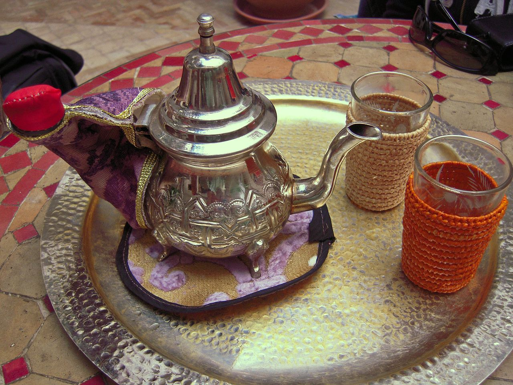

The art of morocain tea

Moroccan tea, often called Moroccan mint tea, is one of the country's most treasured cultural traditions.
Although tea was introduced to Morocco in the 18th and 19th centuries through trade with Europe,
particularly by British merchants, it quickly became an important part of Moroccan daily life.
Over time, Moroccans developed their own unique recipe by combining Chinese green tea with fresh spearmint
leaves and generous amounts of sugar, creating the refreshing drink enjoyed today.
The art of preparing Moroccan tea is a ritual that requires care, patience, and skill.
The tea is brewed in a traditional metal teapot and poured from a height into small decorative glasses,
a technique that mixes the ingredients, cools the tea, and creates a light layer of foam on the surface.
Serving Moroccan tea is a symbol of hospitality, friendship, and respect,
and it is offered to guests during family gatherings, celebrations, and special occasions.
This tradition has been passed down through generations,
making Moroccan tea not only a beloved beverage but also an enduring symbol of Morocco's culture,
identity, and warm welcome.